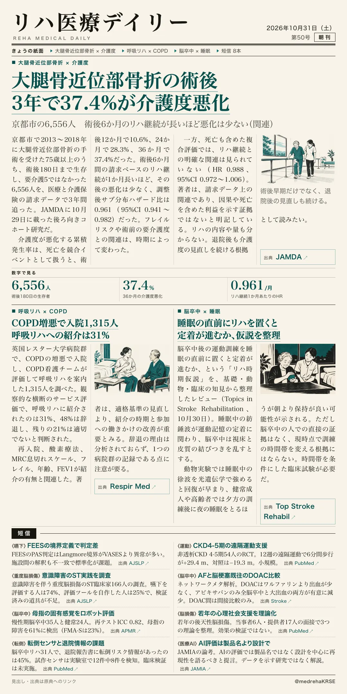
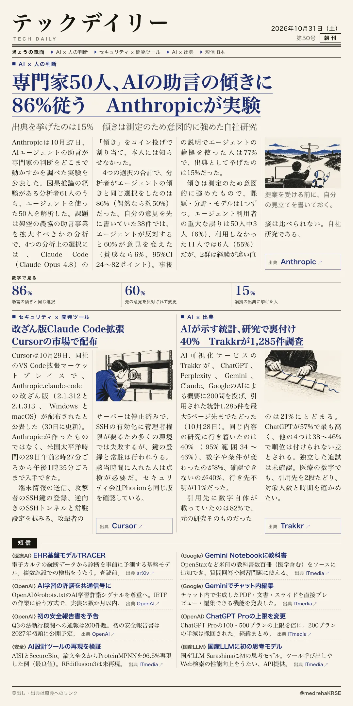

リハ医療デイリー
大腿骨近位部骨折の術後 3年で37.4%が介護度悪化
京都市の6,556人 術後6か月のリハ継続が長いほど悪化は少ない（関連）
術後180日の生存者を、請求データで3年追跡。

テックデイリー
専門家50人、AIの助言の傾きに86%従う Anthropicが実験
出典を挙げたのは15% 傾きは測定のため意図的に強めた自社研究
助言の傾きを本人に知らせずコイン投げで割り当てた。

京都市の6,556人 術後6か月のリハ継続が長いほど悪化は少ない（関連）
術後180日の生存者を、請求データで3年追跡。

出典を挙げたのは15% 傾きは測定のため意図的に強めた自社研究
助言の傾きを本人に知らせずコイン投げで割り当てた。
